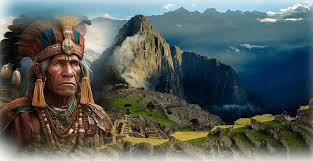
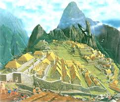

Machu Picchu fue construido en el siglo XV por orden del inca Pachacútec. Su función aún es un misterio: pudo ser residencia real o centro ceremonial. Permaneció oculto por siglos hasta que en 1911 Hiram Bingham lo dio a conocer al mundo. En 1983 la UNESCO lo declaró Patrimonio de la Humanidad y en 2007 fue nombrado Maravilla del Mundo Moderno.
La ciudadela se ubica en Cusco, a más de 2,400 m s. n. m., y está hecha de piedras talladas y encajadas con gran precisión. Se divide en dos sectores, Agrícola: con andenes para cultivos, Urbano: con templos, plazas y recintos sagrados como el Templo del Sol y el Intihuatana.Además de su arquitectura, ofrece paisajes impresionantes de la cordillera andina.
| Servicio x Persona | Precio Aproximado (USD) |
|---|---|
| Entrada a Machu Picchu | 45 |
| Guía turística | 20 |
| Hospedaje (1 noche) | 35 |
| Transporte en tren | 60 |
Déjanos tus datos y recibe información exclusiva sobre ofertas y promociones para visitar Machu Picchu.